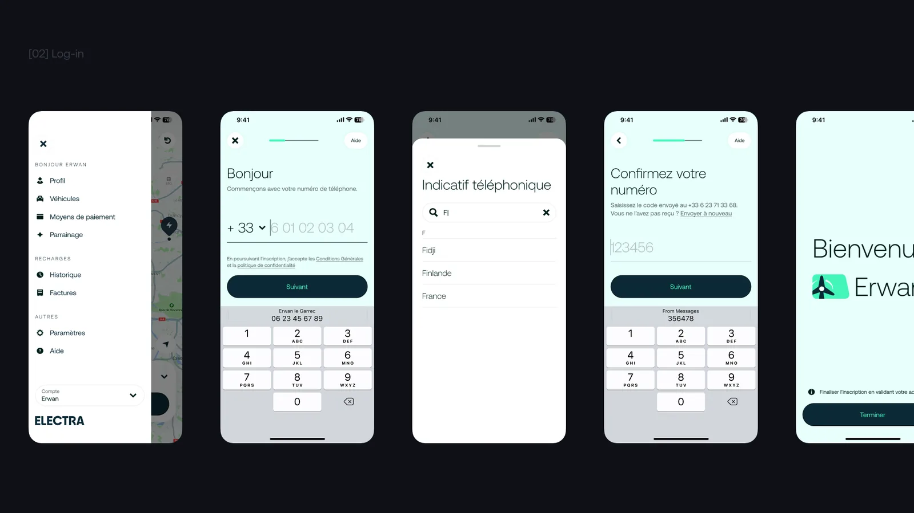
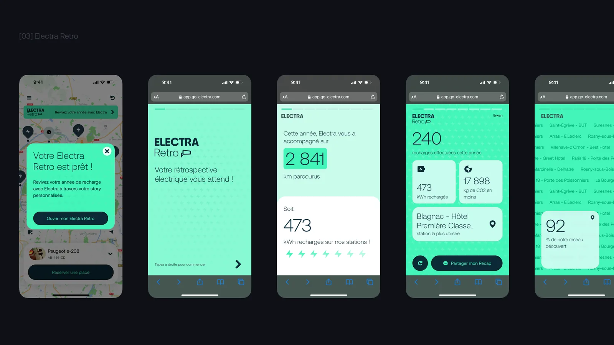
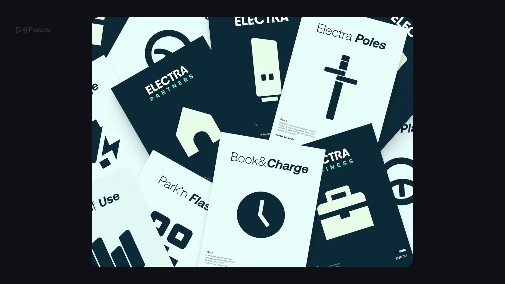

(001) — Portfolio
Rayan
Adamczak
Product Designer
Product Designer✱
Available for freelance✱
Brest, FR✱
Neocity → Electra → Brand Appart → Digifeel✱
(002) — Manifeste
Des solutions centrées utilisateur, qui servent aussi le business.
Au fil des expériences et des projets livrés, j'ai développé un large éventail de compétences : discovery, définition et design, nourris par les insights clients.
(003) — Case studies
(004) — Aperçus



Glisser · swiper · cliquer pour agrandir
(005) — Expertises
Discovery
- User research
- User interview
- Benchmark
- User testing
Design
- Design system
- UX/UI design
- Wireframing
- Prototyping
Delivery
- Accessibilité
- Responsive
- Handoff dev
- Analytics
(006) — Parcours
2026 — auj.
Digifeel · E-commerce & SaaS commerçants
Product Designer
2025 — auj.
Surrealiste Studio · Studio SaaS & landing
Co-fondateur & Designer
2025 — 2026
Brand Appart · Agence branding & produit
Product Designer
2022 — 2024
Electra · Stations de recharge pour voitures électriquesStations de recharge pour EV
Product Designer
2019 — 2022
Neocity · Apps mobiles pour les villes
First Product Designer
(007) — Contact